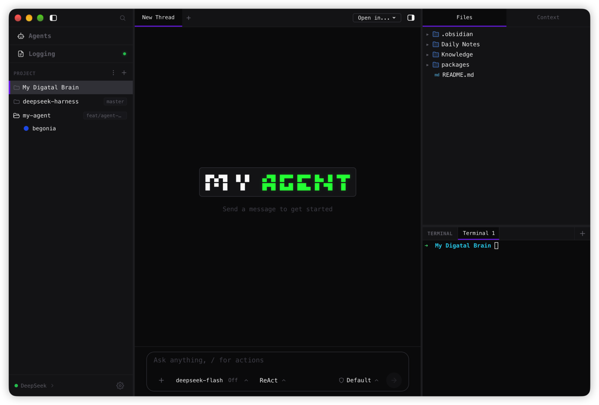
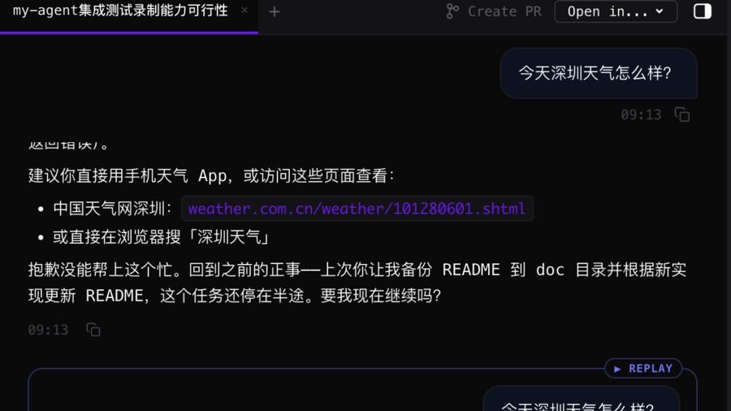
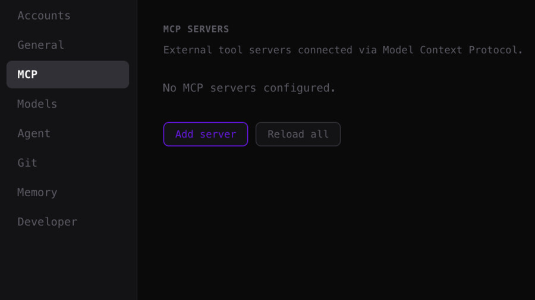
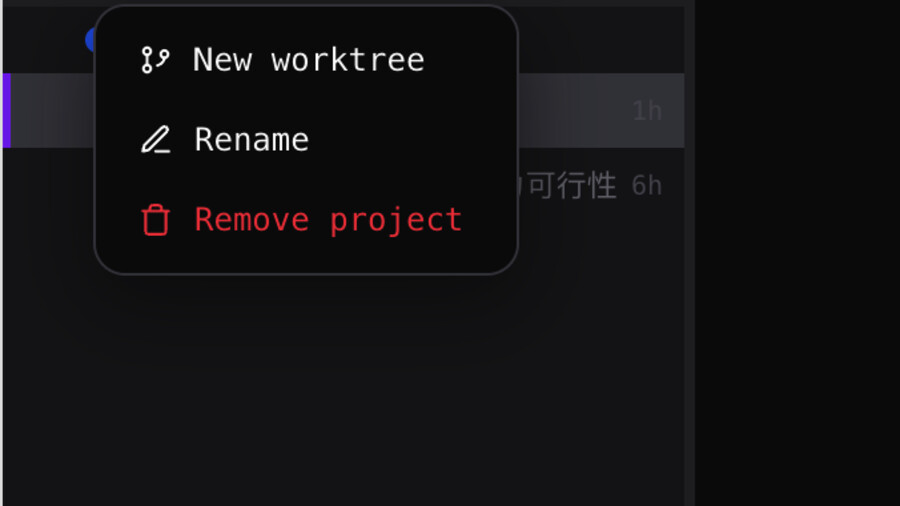
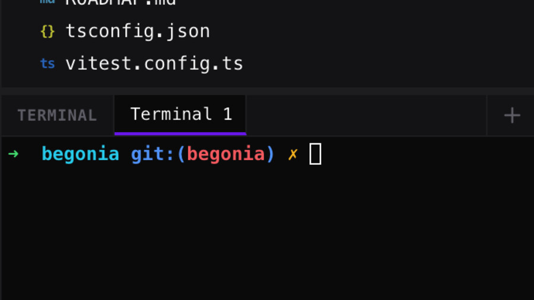
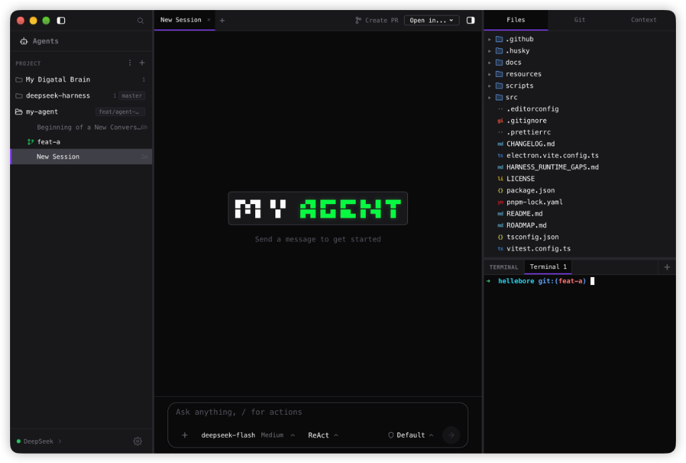
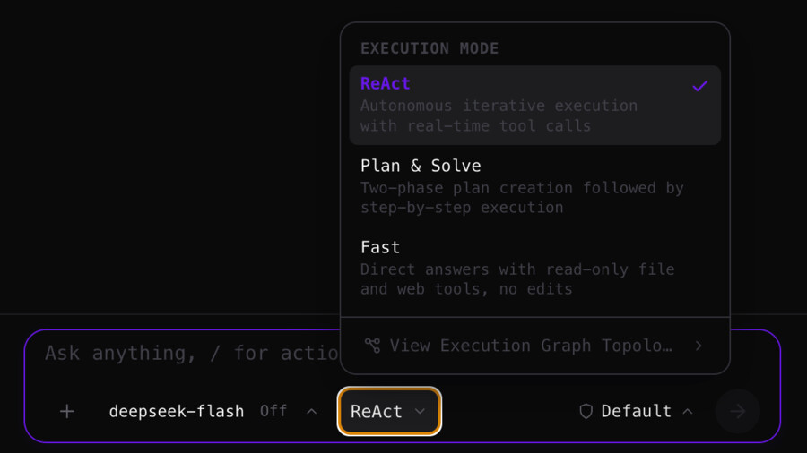
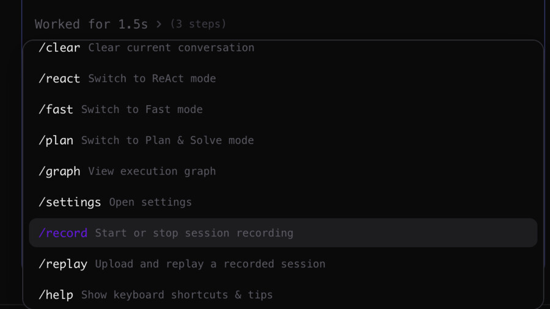

My Agent 是一款专为高效工程研发打造的桌面级自主 AI 工作台。搭载自研 ReAct 调度引擎、原生 MCP 协议客户端、双向 Git Worktree 隔离与极速内嵌终端，助你专注于更高维度的创造。

打破黑盒约束，回归掌控。原生性能、安全隔离与生态开放的深度结合。

自研调度引擎，支持多轮复杂推理、步骤规划、代码智能检索、AST 精准替换与运行报错自我修复闭环。

深度集成 Model Context Protocol 标准客户端，原生支持 Stdio 与 HTTP/JSON-RPC 服务发现与外部工具生态无缝对接。

任务自动运行在独立 Git 工作树分支中，代码修改与测试绝不污染当前正在编写的本地文件，安全无忧。

深度定制 node-pty 与 xterm.js，支持双向交互式输入、窗口尺寸动态同步与长执行命令实时日志流式中继。

基于本地 SQLite 引擎存储完整会话，支持超长上下文后台关键事实抽取与压缩，启动即开即用、会话无缝接续。

ReAct 自主循环、Plan & Solve 先规划后执行、Fast 直连流式响应并保留只读检索能力。切换模式即更换整张执行图与工具集，并按线程独立记忆各自的选择。

一键把真实运行录制为紧凑 JSONL（含思考链与打字节奏），回放零请求零消耗，并按录制时的模型、模式与权限完整还原现场。
当前最新稳定版本 v0.1.2，选择适合您设备的安装包。
适用于 M1 / M2 / M3 / M4 芯片 (ARM64)
Ubuntu / Debian / Arch / Fedora
若系统提示「应用已损坏」或「无法打开来自未验证开发者的应用」，请按下方指引操作。
在 macOS 上若从浏览器直接下载并将 My Agent 移动到「应用程序」后打开提示报错，这是 macOS Gatekeeper 针对未签名应用添加的隔离属性（Quarantine）所致。只需打开「终端（Terminal）」并运行以下命令即可：
xattr -cr "/Applications/My Agent.app"
sudo 执行：sudo xattr -rd com.apple.quarantine "/Applications/My Agent.app"。命令执行完成后，重新在应用程序中双击 My Agent 即可正常启动。